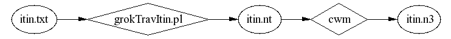

{kind=link}

more details are in the Apr 2003 trip Makefile
The bane of my existence is doing things I know the computer could do for me. When I got my proposed July 2001 travel itinerary in email, I just couldn't bear the thought of manually copying and pasting each field from the iterary into my PDA calendar. I started putting the Semantic Web approach to application integration to work.
The Semantic Web approach to application integration emphasizes data about real-world things like people, places, and events over document structure. Documents are important real-world things too, of course. And Semantic Web data formats benefit from the internationalization support in XML and the growing infrastructure of tools. But most XML schemas are too constrained, syntactically, and not constrained enough, semantically, to accomplish these integration tasks:
While more and more of the data in our lives is available in the Semantic Web, there will always be a place for mechanisms that extract the statements implicit in legacy data.
The data comes from the travel agency like this, probably dumped from their database system:
07 APR 03 - MONDAY AIR AMERICAN AIRLINES FLT:3199 ECONOMY OPERATED BY AMERICAN AIRLINES LV KANSAS CITY INTL 940A EQP: MD-80 DEPART: TERMINAL BUILDING B 01HR 36MIN AR DALLAS FT WORTH 1116A NON-STOP
I hope that before too long they'll dump it from their database directly into RDF or perhaps in XML using some travel industry vocabulary, but
So I wrote a perl script (grokNavItin.pl) to extract statements from the data:

The output of the perl script, itin.nt, is in n-triples, a line-oriented serialization developed in the RDF Core working group for testing parsers. For visual inspection and debugging, we use cwm to pretty-print it in N3. The result look like this:
:_gflt3199_3 a :_gECONOMY_5;
k:endingDate :_gdayMONDAY07_2;
k:fromLocation <http://www.daml.org/cgi-bin/airport?MCI>;
k:startingDate :_gdayMONDAY07_2;
k:toLocation <http://www.daml.org/cgi-bin/airport?DFW>;
t:arrivalTime "11:16";
t:carrier :_gAMERICANAIRLINES_4;
t:departureTime "09:40";
t:flightNumber "3199" .
:_gAMERICANAIRLINES_4 a k:AirlineCompany;
k:nameOfAgent "AMERICAN AIRLINES" .
:_gECONOMY_5 r:value "ECONOMY" .
:_gdayMONDAY07_2 a k:Monday;
dt:date "2003-04-07" .
The import script not only bridges the syntactic gap between the legacy data and RDF, but it also translates the vocabulary of terms used in the data into URI space. This raises the classic build-or-buy choice:
Early versions of the import script used a special-purpose vocabulary; rules to relate this vocabulary to other vocabularies were developed one at a time. But eventually a pattern of using the general purpose cyc ontology emerged, and the expected benefit of maintaining the special-purpose ontology was dominated by the cost. More recent versions convert directly to terms in shared ontologies, except in the case where custom terms were needed:
departureTime, flightNumber, ...; see travelTerms, in RDF/xml,
RDF/n3.
Note that mixing vocabularies in RDF is easy; so easy, compared with the general problem of mixing XML namespaces, that I hardly notice it at all. Within the basic subject/predicate/object abstract syntax, terms can be combined freely. Migrating to more specialized or more generalized terms is cheap, using rdfs:subPropertyOf and the like.
Let's exploit the effort we have put into going beyond formalized document structure into formalized data about the real world. Folks in the DAML project have imported airport lat/long data into the semantic web; we can use log:semantics to reach out and get it with rules like these, excerpted from airportLookup.n3:
# well-known airports...
{ :X a :Y; #@@kludge...
log:uri [ str:startsWith "http://www.daml.org/cgi-bin/airport?" ] }
log:implies { :X a :AirportKnownToDAML }.
{ :X apt:iataCode :K.
:Y log:uri [ is str:concatenation of
("http://www.daml.org/cgi-bin/airport?" :K) ];
}
log:implies { :Y a apt:Airport; apt:iataCode :K; = :X }.
# we only want to look up certain airports...
{ [ k:toLocation :X ]. }
log:implies { :X a :InterestingPlace }.
{ [ k:fromLocation :X ]. }
log:implies { :X a :InterestingPlace }.
# believe what daml.org says about airport latitutde/longitudes...
:AirportProperty is rdf:type of
apt:latitude,
apt:name,
apt:iataCode,
apt:icaoCode,
apt:location,
apt:latitude,
apt:longitude,
apt:elevation.
{
:P a :AirportProperty.
[ a :AirportKnownToDAML, :InterestingPlace;
log:semantics [
log:includes {
:IT :P :X.
}
] ].
} log:implies {
:IT a apt:Airport; :P :X.
}.
For the convenience of consumers (including ourselves), we publish in RDF/XML the results of reaching out with the rules; i.e. the itinerary including the lat/long info. Then we use the (little documented) cwm --strings output mode to generate two files, itin-arcs and itin-markers, as input to xplanet:
The resulting map shows that we have given the machine a fairly deep understanding of the itinerary:
In fact, the published RDF/XML version of the itinerary is joined not only with latitude/longitude data, but also timezone data, and elaborated via itin2ical.n3 rules into an RDF representation of the standard iCalendar syntax.
{ :FLT
k:startingDate [ dt:date :YYMMDD];
k:endingDate [ dt:date :YYMMDD2];
t:departureTime :HH_MM;
k:fromLocation [ :timeZone [ cal:tzid :TZ] ];
t:arrivalTime :HH_MM2;
k:toLocation [ :timeZone [ cal:tzid :TZ2] ].
:DTSTART is str:concatenation of
(:YYMMDD "T" :HH_MM ":00"). #@@ extra punct in dates
:DTEND is str:concatenation of
(:YYMMDD2 "T" :HH_MM2 ":00").
( :FLT!log:rawUri "@uri-2-mid.w3.org") str:concatenation :UID. #@@hmm... kludge?
}
log:implies {
:FLT a cal:Vevent;
cal:uid :UID;
cal:dtstart [ cal:tzid :TZ; cal:dateTime :DTSTART ];
cal:dtend [ cal:tzid :TZ2; cal:dateTime :DTEND ].
}.
The final syntactic export is more complex than the markers/arcs case, so we wrote a python program, toIcal.py, using the cwm API, to generate iCalendar syntax.
We can import the resulting iCalendar file into an of a number of interoperable tools, such as Ximian Evolution:
The itin2ical.n3 rules were actually developed after my Palm Pilot broke and I switched to an iCalendar tool. The original rules mapped to an RDF vocabulary for the palmpilot datebook, developed for use with palmagent, an HTTP/RDF interface to my PDA:
All this rich integration is great when the tools are all working and you have plenty of bandwidth and all that, but sometimes, plain text is necessary and sufficient for the task at hand. For example, if I get mail asking when I arrive at the meeting site, mailing back a map is probably overkill, and I can't be 100% sure their desktop is iCalendar-happy.
The cwm --strings output mode can be really handy in these cases; we can use a few itinBrief.n3 rules ala...
python cwm.py itinBrief.n3 itin.nt --think --strings
to get a summary ala...
2003-04-07 09:40 - 11:16 MCI->DFW Monday AMERICAN AIRLINES #3199 2003-04-07 12:03 - 15:49 DFW->MIA Monday AMERICAN AIRLINES #68 2003-04-10 19:12 - 21:32 MIA->ORD Thursday AMERICAN AIRLINES #1477 2003-04-10 22:33 - 23:54 ORD->MCI Thursday AMERICAN AIRLINES #1081
Now that I have the proposed itinerary formalized, I can automatically check it against various constraints before I accept it and before I copy it to my PDA and to all the other peers that need to know about it.
Rules like "itineraries that have me leaving before 30 July are no good" are a bit tedious to formalize, but my confidence in the results is higher than my confidence in eyeballing it:
{
?D a k:ItineraryDocument; k:containsInformationAbout-Focally ?TRIP.
?TRIP k:subEvents
[ k:startingDate [ dt:date ?D1 ];
k:fromLocation [ apt:iataCode "MCI" ];
t:departureTime ?T1;
].
?D1 str:lessThan "2001-07-30".
} => {
?TRIP <#leavesDaysTooSoon> ?D1;
<#at> ?T1.
}.
These constraints can be checked with cwm ala:
$ python cwm.py proposed-itinerary.nt --think=constraints.n3
... and look for <#leavesDaysTooSoon> in the output.
For the first few integration tasks, it might have been less work to just manually copy the data, field by field. But the return on investment increases with each trip I take, each system we integrate with, and each collaborator who develops an interoperable tool.
The DAML project is a source of not just airport lat/long data, but also tools such as DAML itinerary by Mike Dean.
Ideas for future work include: